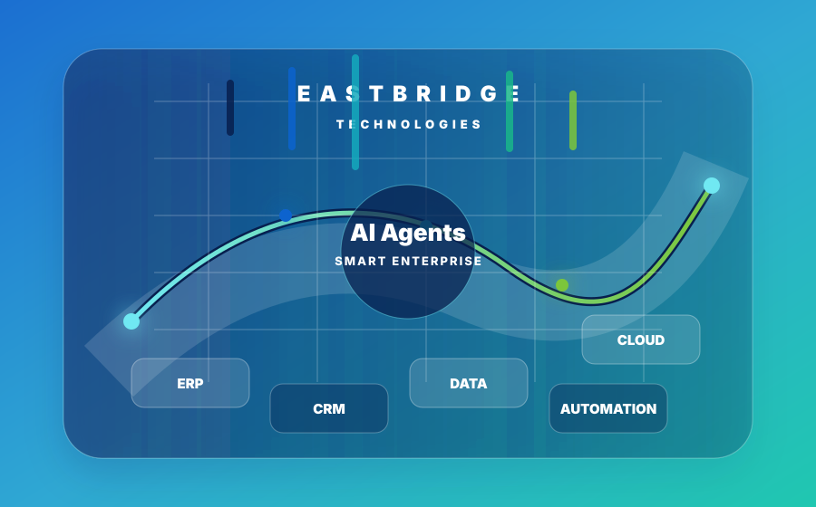

01
Penyelidikan gunaan
Mengkaji masalah operasi, teknologi baharu dan keperluan industri sebelum memilih penyelesaian.
R&D EastBridge menukar masalah perusahaan sebenar kepada perisian terkawal, pemecut boleh guna semula dan AI bertanggungjawab yang direka di Vietnam untuk pasaran serantau.

Agenda penyelidikan kami berasaskan nilai pelanggan yang boleh diukur, kejuruteraan selamat, kebolehpasaran dan pemilikan jangka panjang aset teknologi Vietnam.
Mengkaji masalah operasi, teknologi baharu dan keperluan industri sebelum memilih penyelesaian.
Menukar idea yang disahkan kepada seni bina, prototaip, keluaran boleh diuji dan komponen boleh guna semula.
Membuktikan nilai melalui projek rintis, metrik penggunaan, hasil produk dan hasil pelanggan.
Ketua Penyelidikan & Pembangunan
Memimpin penyelidikan gunaan, seni bina produk, AI bertanggungjawab, perisian hijau, tadbir urus harta intelek dan kerjasama industri EastBridge.
Keutamaan dinilai mengikut keperluan pelanggan, kebolehlaksanaan teknikal, keselamatan, kelestarian, pemilikan dan potensi komersial.
Keutamaan, pembiayaan, risiko, pembelajaran dan keputusan peringkat seterusnya.
Keperluan, seni bina, kawalan sumber, ujian, keluaran dan bukti sokongan.
Privasi, keselamatan, pengawasan manusia, kebolehcapaian dan kecekapan alam sekitar.
Bakat tempatan, hubungan universiti, kerjasama pembekal dan pemilikan produk dari Vietnam.
Portfolio yang fokus menghubungkan pengalaman pelaksanaan EastBridge dengan peluang produk yang boleh diuji dan dikomersialkan.
Pembantu boleh diaudit, ringkasan, pengesanan anomali dan sokongan keputusan dengan pengawasan manusia.
Aliran kerja, templat, sambungan dan analitik yang sesuai untuk perniagaan Vietnam.
API boleh guna semula, orkestrasi, kawalan data induk dan kebolehlihatan merentas platform.
Identiti, akses, SDLC selamat dan perlindungan data yang dibina dalam reka bentuk produk.
Kod cekap, infrastruktur bersaiz tepat, pemerhatian dan amalan kitar hayat yang mengurangkan pembaziran digital.
Portal, aliran kes, integrasi dan analitik melalui kerjasama penyampaian yang layak.
Setiap inisiatif bergerak melalui peringkat berasaskan bukti.
Tentukan pengguna, masalah, asas dan hasil perniagaan.
Nilai teknologi, data, risiko, kelestarian dan pasaran.
Uji seni bina, aliran kerja dan pengalaman.
Ukur nilai, keselamatan, prestasi dan penggunaan.
Lengkapkan kualiti, keselamatan, pelesenan dan dokumentasi.
Kembangkan secara berulang sambil memperbaiki hala tuju produk.
Laluan terukur daripada asas tadbir urus kepada produk berulang dan kerjasama serantau.
Piagam R&D, pasukan bernama, daftar IP, repositori selamat dan spesifikasi produk.
Keluaran berfungsi, pengesahan pelanggan, semakan keselamatan dan bukti hasil.
Tawaran berulang, IP dilindungi, rujukan pelanggan dan kesediaan ASEAN.
EastBridge bekerjasama dengan pelanggan, universiti, pakar dan rakan teknologi dalam penyelidikan gunaan, projek rintis dan kejuruteraan produk.